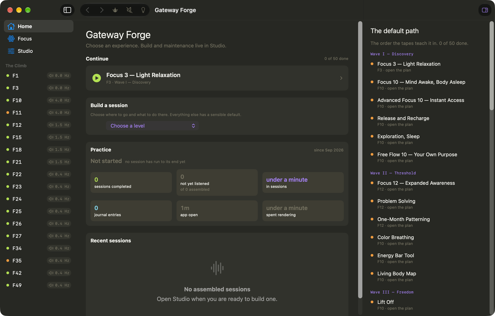
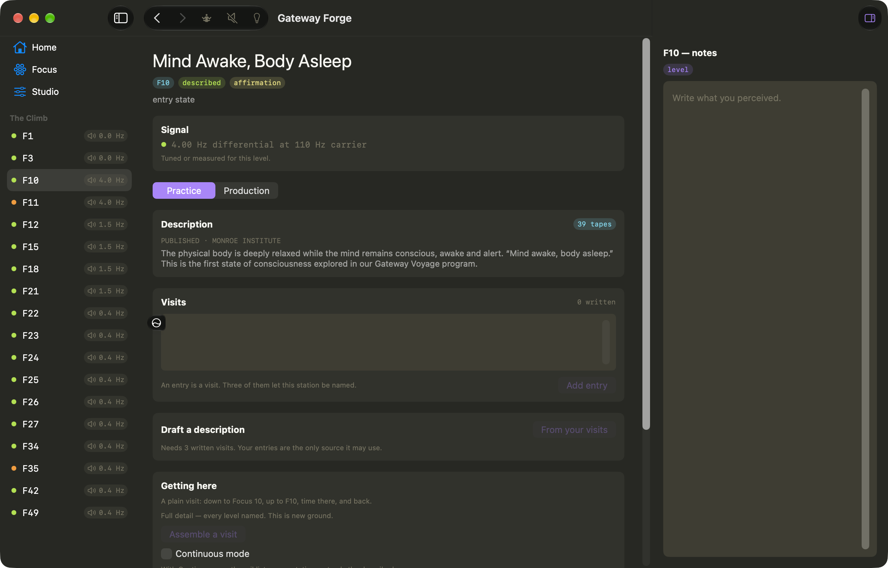
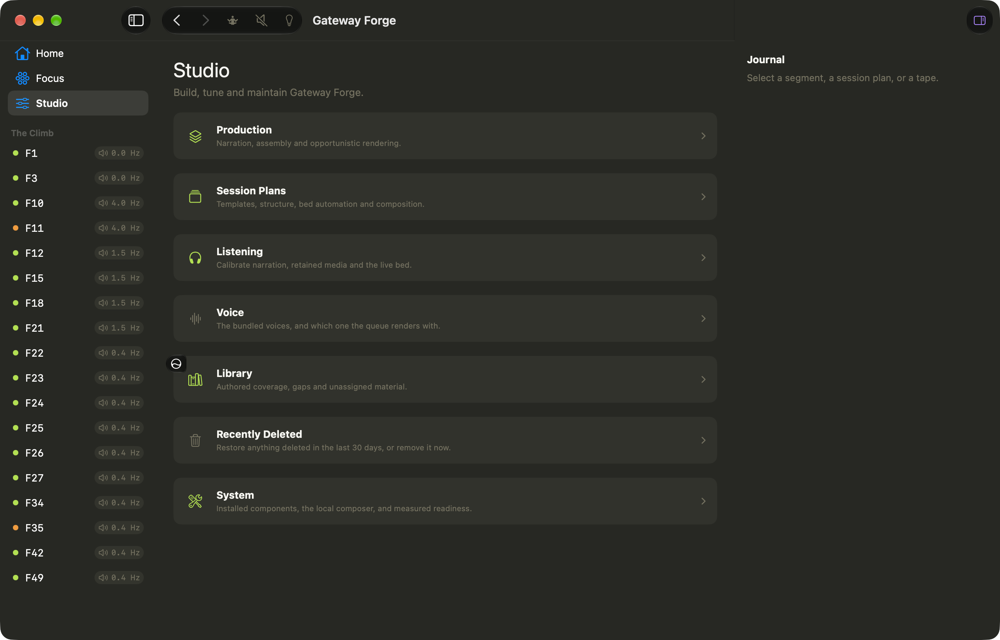

3,672
checks currently passing
A guided-meditation assembly system and journal built around the Monroe Institute's Gateway framework — the Institute's own map kept beside what was actually found, never merged into one answer.
Why it exists
The Monroe Institute published what its Gateway tapes are supposed to do. Practicing them for years produces a second account — the listener's own — and the two do not always agree. Focus 26 is the clearest case: the Institute places it among the Belief System Territories; what's actually there is a featureless dark. Most tools would pick a winner. This one shows both, permanently, and lets the disagreement stand.
That single decision — published is not found, and neither overwrites the other — runs through the whole app: three-valued coverage (a level is described by a tape, by a second-hand summary, or by nothing at all, and those are different kinds of evidence), a local model that drafts session content but only from what's actually written down, and a binaural bed generated fresh at playback from measurements of the real tapes rather than looped recordings of them.
Measured
The bundled voice is a Piper/VITS model fine-tuned on real speech, and its training clips were trimmed tight — so the model learned to stop mid-breath. A short line like "Build the pattern." ended at rms 0.0061 with the mic still open, against roughly 0.0007 for a clean stop. The fix isn't a fade — fading a real recording eats the same consonant it's meant to protect — it's giving the model two extra frames of silence to decay into before the cut.
| padding | mean tail rms | worst case | runs above threshold |
|---|---|---|---|
| none | 0.00180 | 0.00605 | 14% |
| +1 frame | 0.00075 | 0.00246 | 0% |
| +2 frames | 0.00039 | 0.00079 | 0% |
| +3 frames | 0.00112 | 0.00336 | 0% |
Three frames is worse than two — past a point the model has room to voice into the extra silence rather than settle into it. It's a measured optimum, not a rounder-sounding guess, over seven real lines and five draws each.
The app
Shots below are a genuinely fresh install — this public checkout's own bundled library, zero visits, zero journal entries. Not staged: the Institute's transcripts aren't the author's to redistribute, so a public build never has more to show than this.

Home, and the shell everything else sits in: the climb rail on the left, the workspace in the middle, an inspector on the right. The rail lists every Focus level whether or not anything has been written for it yet — an empty one is a place awaiting content, never an error state.

A level. The measured signal it actually plays, the Institute's published description kept as theirs, and the space for what you found instead — with that level's journal in the right pane rather than behind a separate mode.

Studio, where building and maintenance live so Home never has to carry them.
■ the trunk — the F27 tape's own seven climbs, F1 through F27 — with spurs branching where the tapes detour: F11 off F10, F18 off F15, F22 off F21, F24 off F23, then F27 continuing to F34, F35, F42, F49.
Measured, from the source material
FFT analysis across all fifty original tapes, keeping only genuine offset pairs (a real binaural signal, not two centred peaks) and weighting by how long each one holds. The whole programme collapses to three signals:
| signal | beat | carrier | where |
|---|---|---|---|
| A | 4.0 Hz | ~99–100 Hz | Wave I · Focus 10 |
| B | 1.50 Hz | ~99.2 Hz | Waves II–VI · Focus 12, and parts of 15 & 21 |
| C | 0.37 Hz | ~48.8 Hz | Waves VI–VIII · Focus 21 upward, all of Focus 27 |
The app never plays a looped recording of these — it regenerates the pair live from the measurement, so the differential can move continuously through a session's transitions instead of cutting at a seam. Transitions sweep rather than glide: the differential widens before it narrows, matching how a transition was actually described rather than a straight linear fade.
Three decisions worth naming
The Institute's own description and the listener's own account are stored separately and shown together. A level page can disagree with itself on purpose — that's the data, not a bug to reconcile.
Session drafting runs on a local Ollama model against the app's own documented material — it proposes an include/omit decision per real segment, never new narration, and nothing reaches the library unreviewed.
Guidance invites noticing rather than asserting what you'll feel. A placeholder briefing for an unmapped level says so and names the level as unmapped, rather than inventing scenery to fill the gap.
Downloads
A signed (ad-hoc) build, straight from this repository's own release tag — the same ./build.sh anyone can run themselves, just already run.
Gatekeeper will refuse an unsigned download by default — right-click the .app and choose Open once, or clear the quarantine flag from Terminal, either of which says you mean to run it.
xattr -cr "Gateway Forge.app" is the Terminal route, run once after unzipping. SHA-256 of the archive is published on the release page — check it against what you downloaded before you clear anything.git clone https://github.com/snepssen/gateway-forge.git
cd gateway-forge && ./build.shswift build, then it assembles and ad-hoc signs the .app. No installer, no elevated permissions, nothing leaves the machine.GatewayCompanion.xcodeproj is the iOS 17 client — build and run it from Xcode on a device or simulator. It talks to the desktop over the LAN only: pairing is Keychain-secured, the listener's library and journal never touch a server outside the house.
| component | platform | status |
|---|---|---|
| Desktop app | macOS 14+, Apple Silicon | Installed daily driver |
| iOS companion | iOS 17+ | Builds and syncs over LAN |
| Windows / Linux | TypeScript core | Core ported and checked — no interface yet |
cross-platform/ is 57 core modules and 29 check suites with no
interface on top of them and nothing to package — deliberately, so the rules
are proven to travel before anything is built to sit on them. Every push runs
that core on real Ubuntu and Windows runners against the same fixtures the Mac
build is held to. What is still undecided is the speech engine: the bundled
voice is Piper through ONNX Runtime, and which engine a non-Mac build should
carry is the question that gates the interface, not the other way round.How it's built
Native Swift and SwiftUI throughout, no web engine and no bundled interpreter — the build fails outright on any Python file anywhere in the tree, on purpose. Speech runs through the same Piper/VITS-over-ONNX engine Voice Forge was built to expose, here bundled as a single fixed voice fine-tuned on the author's own speech.
A checkout of this public copy has its corpus-dependent suites — the ones that read the original tape transcripts or the Institute's manuals — stand down by name instead of either failing on files that were never meant to ship here, or quietly reporting health they never actually looked for. note [source tapes] no tape transcripts in this tree — corpus suites stand down (this is the expected state of a build made for distribution) is what that looks like in practice.
The three retained resonant-tuning cues and the wake-up signal that used to come from sampled Monroe tape recordings are now synthesised: the bed generates its own tuning and its own return signal, live, at the measured frequencies above. Nothing sampled from the original tapes ships in this build.
Get in touch
No analytics, no crash reporter, no way for a failure to reach me on its own. If you build it and something breaks, the version and platform are worth including.